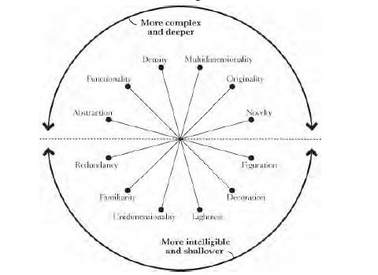
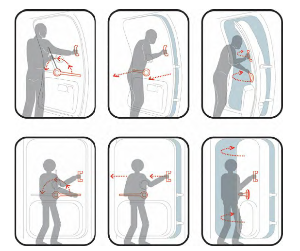
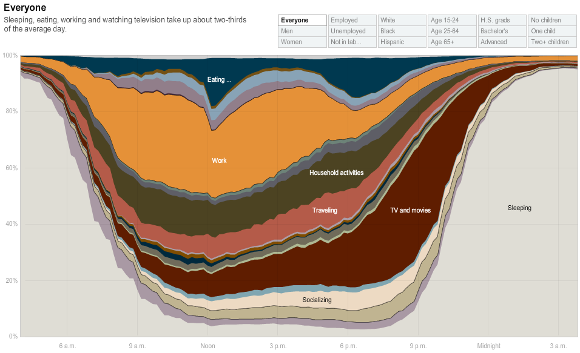

Comparison of Authors
Alberto Cairo and Amanda Cox Data Visualization Styles Comparison
While Alberto Cairo and Amanda Cox have been top data storytellers in their work in newspaper journalism (Cairo for El Mundo and Cox for the New York Times), their work in data visualization has markedly differing styles.
Cairo uses a data visualization wheel to inform his own work. The wheel includes the following features: Abstraction-Figuration, Functionality-Decoration, Density-Lightness, Multidime nsionality-Unidimensionality, Originality-Familiarity, and Novelty-Redundancy.

These are the dynamics Cairo considers. Within his infographics, Cairo emphasizes the need for simplicity and clarity to thoughtfully achieve visualization goals. For example, while studying airline safety card design, he points to abstraction as the best way to convey the action of how to leave an airplane safely in an emergency rather than through realistic photographs on the safety card. He is pragmatic in his approach for achieving visualization goals that assist the audience in feeling relevance to the data and easily parsing through to the main message of the visualization before them.

In contrast to Cairo, Amanda Cox’s visual style often utilizes big data with a filtering, grouping, and aggregation approach in order to provide users with interactive tools to dig into data from the U.S. and zoom in to a subset that they are interested in (such as their state/age/gender, etc). Cox’s style allows viewers to easily see broad and larger themes as well as to explore details within categories. Cox attends to details which enhance the visual, such as in her work “How People in America Spend their Day.” The visual is meant to be an interactive tool for which one can find his or her own profile to understand how peers in the same category are spending their day. Cox’s work becomes interesting and relevant to a user who is empowered to come up with their own questions and conclusions while using the tool. While the amount of statistical work behind the tool is incredible (Amanda’s background is in statistics), the user is able to remain unaware of the complexity behind the tool and imagines it to be a simple click and search operation.

While data journalism is an evolving field, Alberto Cairo and Amanda Cox contribute their own flavors of data visualization to the field and increase the caliber of work that is being done to properly inform the public of the realities in which we live.